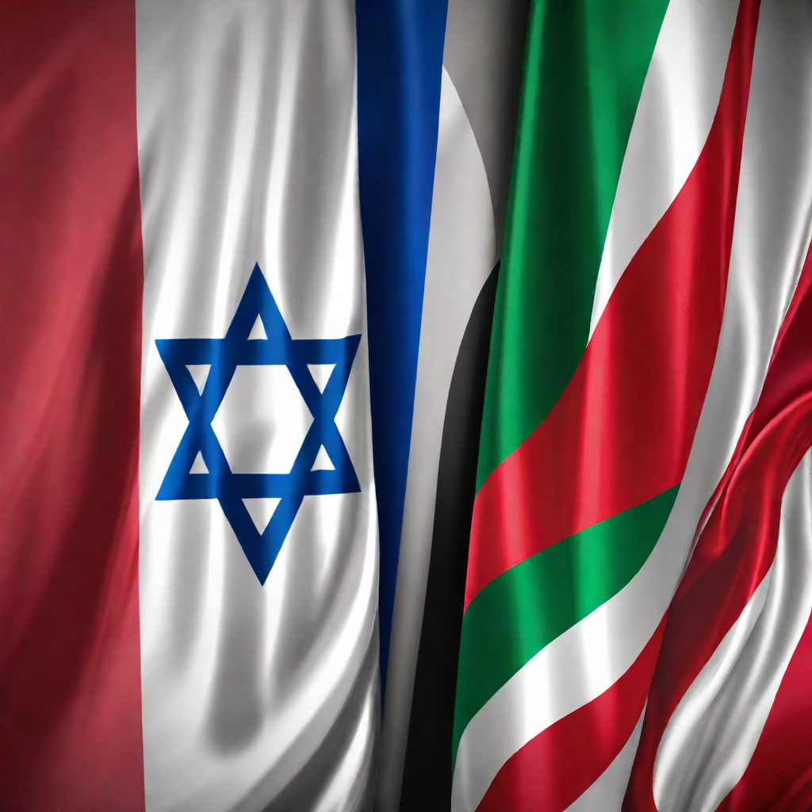
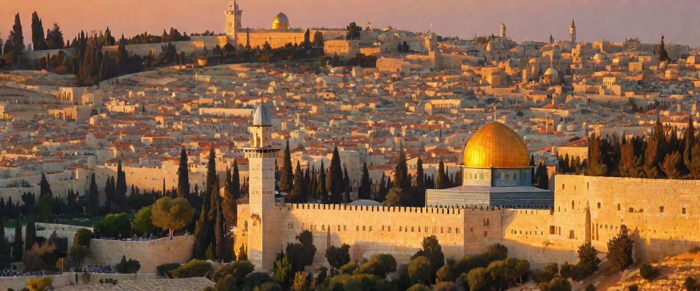
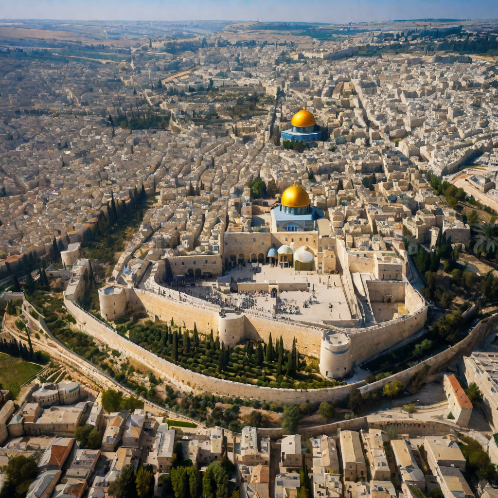
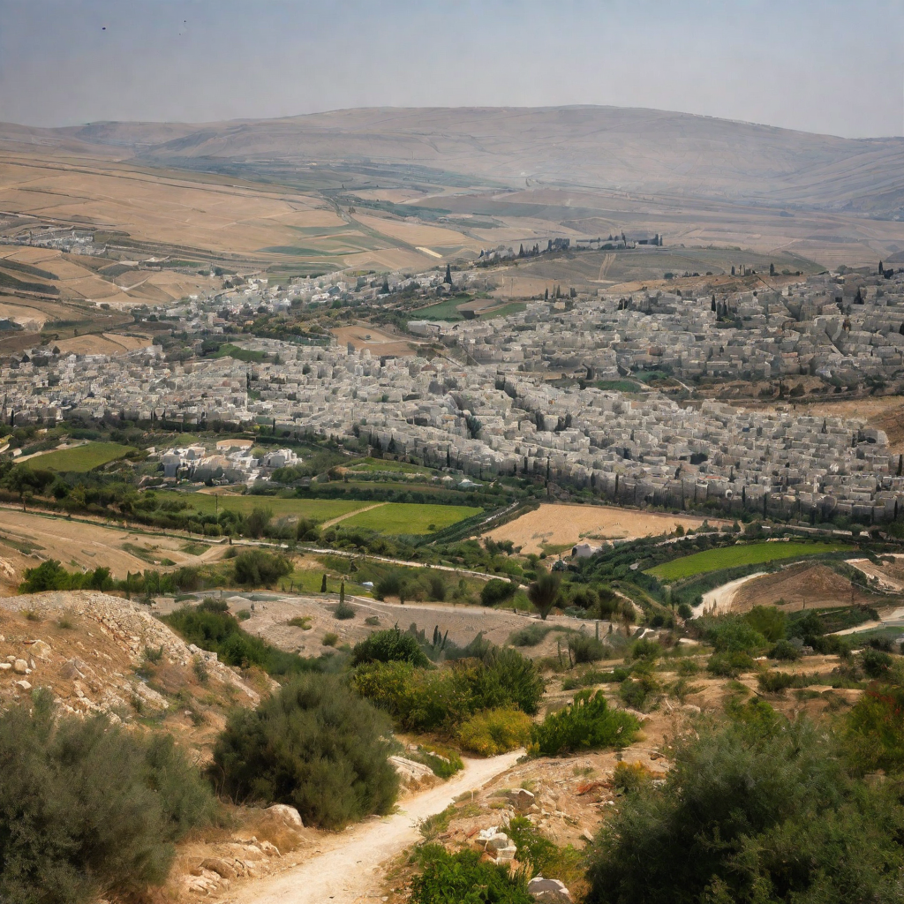
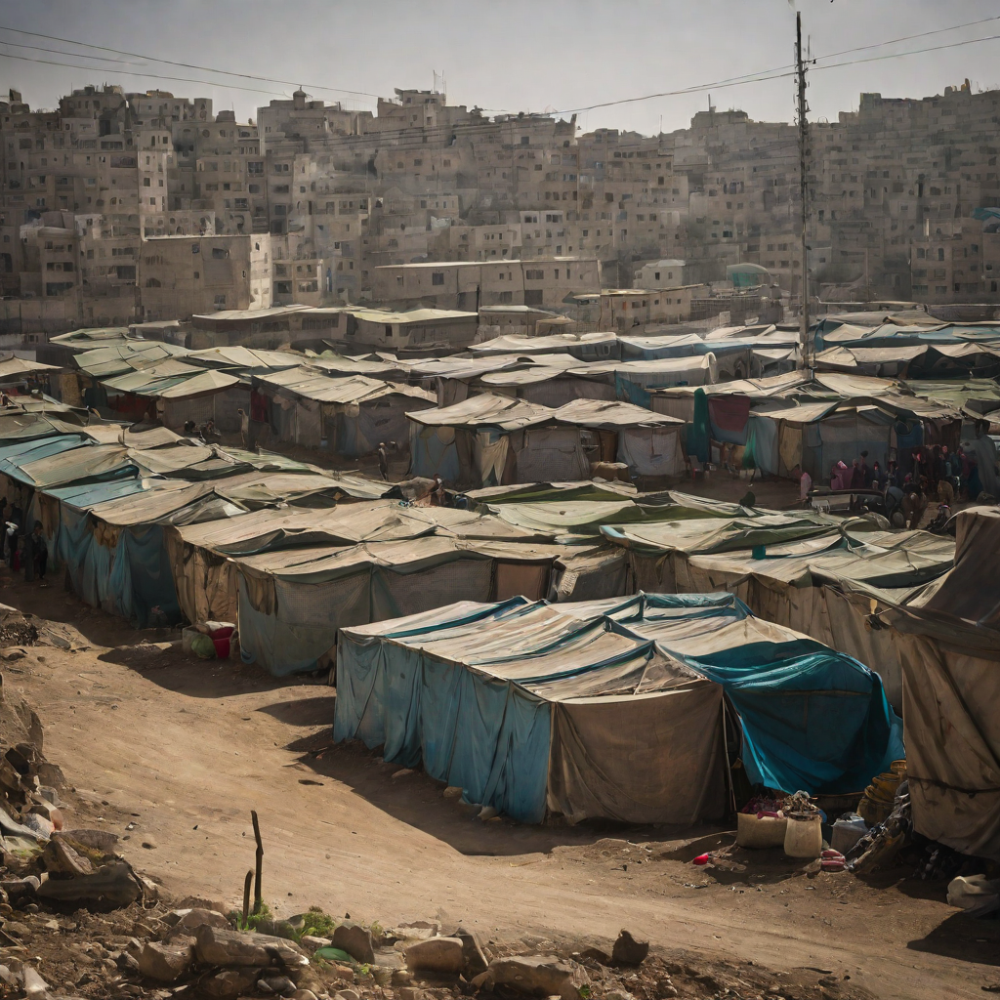
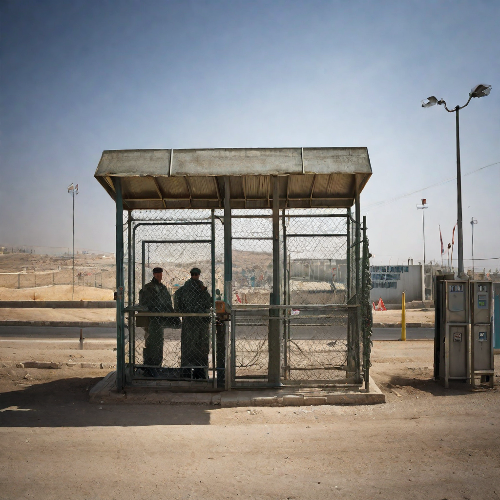
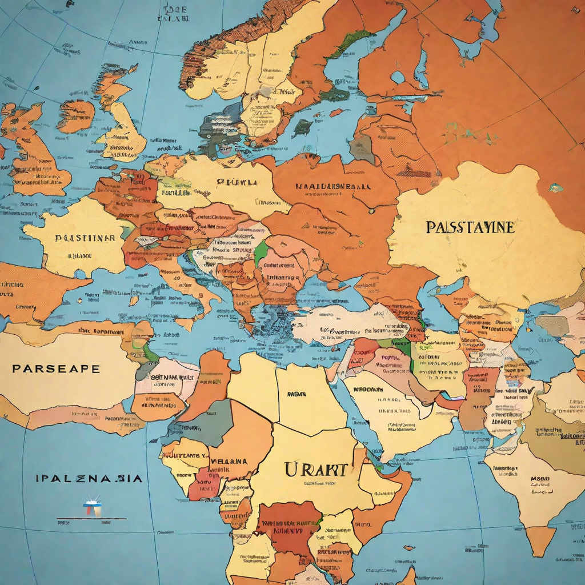
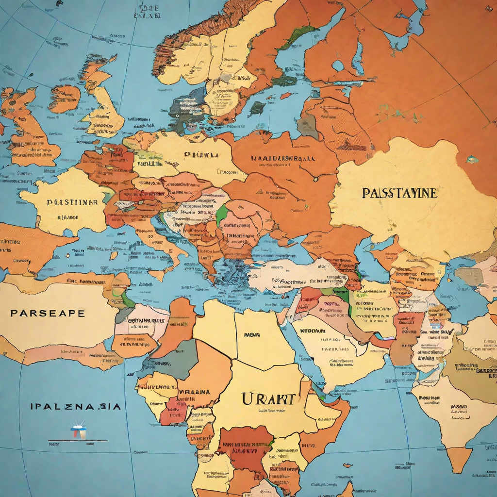

Palestine vs israel
Historical Background of the Palestine-Israel Conflict
The conflict between Palestine and Israel has deep historical roots that date back to the late 19th century. At the heart of the conflict is the question of land ownership and national identity. Both Palestinians and Israelis have historical and religious ties to the land, which has led to competing claims and territorial disputes. The conflict has been marked by periods of violence, negotiations, and international intervention.
Territorial Disputes
 Historical Background
The territorial disputes between Palestine and Israel date back to the early 20th century, with the establishment of the Zionist movement and the subsequent creation of the State of Israel in 1948.
Current Situation
The main territorial disputes revolve around the West Bank, East Jerusalem, and the Gaza Strip. Both Israel and Palestine claim these areas as part of their respective territories.
Why Palestine Should Not Be Attacked
Palestine is a sovereign state with a right to self-determination and protection under international law. Any attack on Palestine would be a violation of these fundamental principles and would have serious consequences for the region and the world.
Humanitarian Concerns
An attack on Palestine would result in the displacement of thousands of civilians, including women and children, and would cause significant humanitarian suffering. It would also undermine efforts to promote peace and stability in the region.
International Law
Palestine is recognized as a sovereign state by the international community and has the right to defend itself against aggression. Any attack on Palestine would be a violation of international law and would undermine the rule of law in the world.
Peace Efforts
Oslo Accords
The Oslo Accords, signed in 1993, were a significant peace effort between Palestine and Israel. The accords aimed to establish a framework for resolving the Israeli-Palestinian conflict and included provisions for the creation of the Palestinian Authority, limited self-governance for Palestinians, and the withdrawal of Israeli forces from certain areas.
Camp David Summit
The Camp David Summit in 2000 was a peace effort led by the United States. The summit aimed to resolve the Israeli-Palestinian conflict by addressing key issues such as borders, settlements, Jerusalem, and the right of return for Palestinian refugees. Despite intensive negotiations, the summit did not result in a final peace agreement.
Road Map for Peace
The Road Map for Peace, proposed by the United States, European Union, Russia, and the United Nations in 2003, outlined a series of steps to achieve a two-state solution and end the Israeli-Palestinian conflict. The plan called for a freeze on Israeli settlements, Palestinian political and security reforms, and negotiations towards a final status agreement. However, the implementation of the road map faced significant challenges and has not led to a lasting peace agreement.
Humanitarian Crisis
 Displacement and Refugees
The conflict has resulted in the displacement of thousands of Palestinians, leading to a significant refugee crisis.
Access to Basic Services
Many Palestinians face limited access to basic services such as healthcare, education, and clean water.
International Relations
.png) 

International Diplomacy
The conflict between Palestine and Israel has garnered significant attention and involvement from the international community.
Regional and Global Players
Various countries and international organizations have been involved in peace negotiations and mediation efforts.